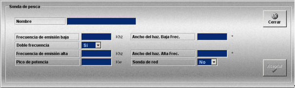

Sonda de Pesca
La creación y edición de sondas de pesca se realiza mediante la siguiente ventana.

Esta ventana permite definir las sondas de pesca que podrán ser añadidas a las unidades participantes en los Ejercicios.
Para cada sonda se definen los siguientes datos:
Nombre: Nombre de la sonda de pesca.
Formato: caracteres alfanuméricos.
Frecuencia de emisión baja: Frecuencia de operación de la sonda en el espectro de baja frecuencia.
Unidades: kilohercios
Rango: 0 - 100
Frecuencia de emisión alta: Frecuencia de operación de la sonda en el espectro de alta frecuencia. Este campo sólo está disponible si se selecciona “Si” en el campo Doble Frecuencia.
Unidades: kilohercios
Rango: 100 - 200
Doble frecuencia: Puede tomar los siguientes valores:
Pico de Potencia: Máxima potencia de la sonda.
Unidades: kilovatios
Rango: 1 - 100
Ancho del haz Baja Frec.: Amplitud del haz de la sonda para las emisiones en baja frecuencia.
Unidades: grados
Rango: 10 - 20
Ancho del haz Alta Frec.: Amplitud del haz de la sonda para las emisiones en alta frecuencia. Este campo sólo está disponible si se selecciona “Si” en el campo Doble Frecuencia.
Unidades: grados
Rango: 5 - 10
Sonda de red: Puede tomar los siguientes valores: